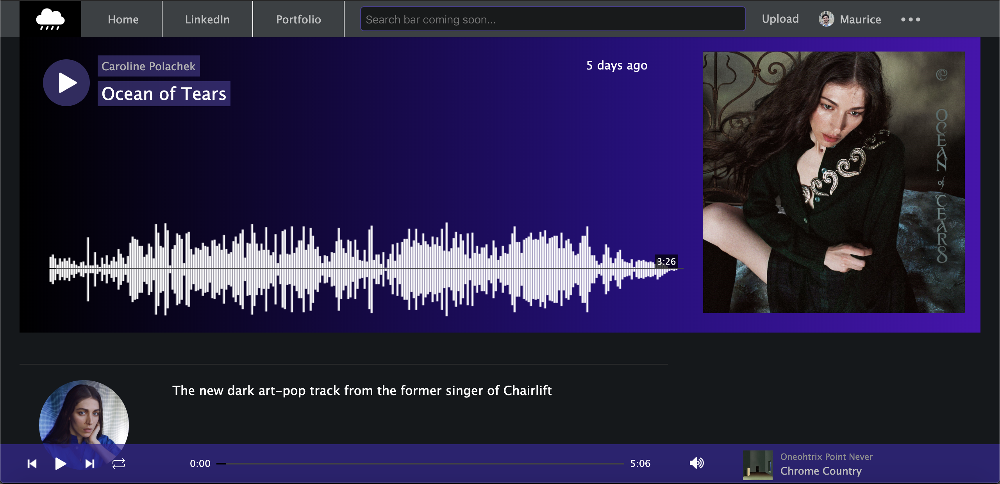

Maurice Goldberg
Full-Stack engineer with a degree in Computer Science from Columbia University and expertise in React, Redux, Rails, and C++
Full-Stack engineer with a degree in Computer Science from Columbia University and expertise in React, Redux, Rails, and C++
Technologies: React, Redux, Rails, PostgreSQL, MongoDB, Express, Node, jQuery, AJAX, HTML, CSS, SASS, Bootstrap, Wavesurfer, Google Maps API, Google Civic Information API, Ticketmaster API, Cinema4D

ⓧ
SoundShroud (2020): a pixel-perfect dark mode clone of SoundCloud (React-Redux, Rails, PostgreSQL, AJAX, Wavesurfer, HTML, CSS)

ⓧ
MASHER (2020): a web app that combines pop hits to create new hybrid songs (Vanilla JS, Web Audio API, HTML, CSS)

ⓧ
plantr (2020): a MERNStack web app that reminds you via email when to water your plants (MongoDB, Express, React-Redux, Node, HTML, CSS)

ⓧ
ShowDown (2016): a web app that finds nearby events using the Ticketmaster and Google Maps APIs (Angular, jQuery, AJAX, HTML, CSS)
ⓧ
Call Your Senators! (2016): a web app that finds your local and state representatives (jQuery, Google Civic Information API, HTML, CSS)

ⓧ
Dark Cartoon: a short 3D video loop made in Cinema4D